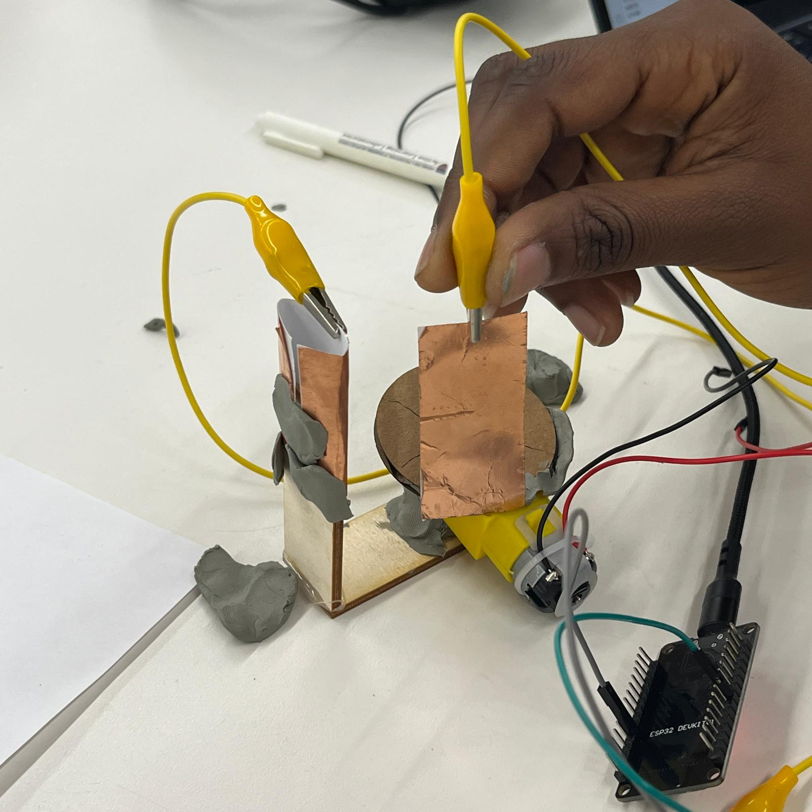
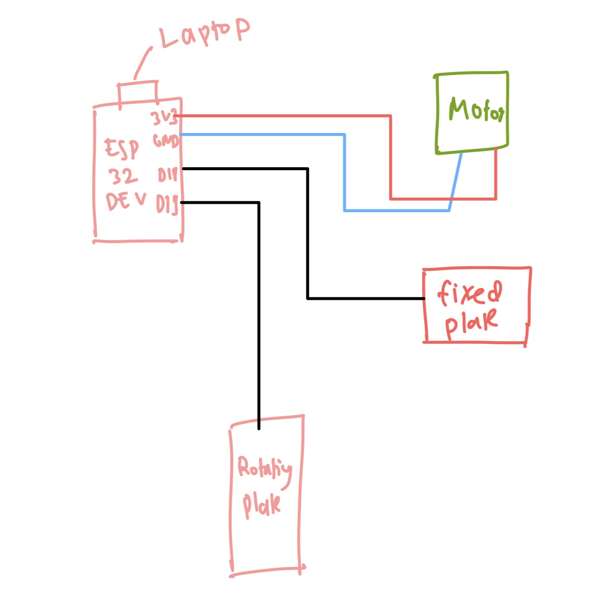
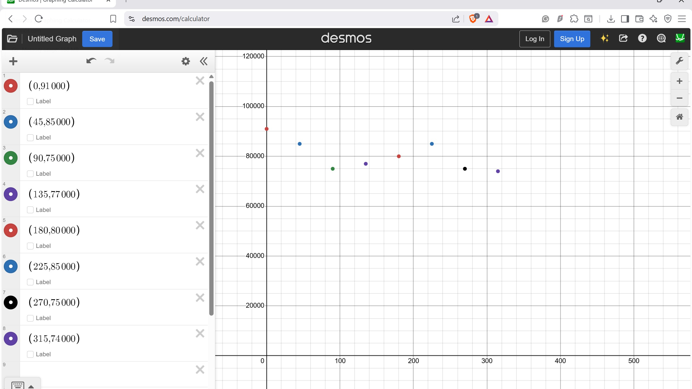
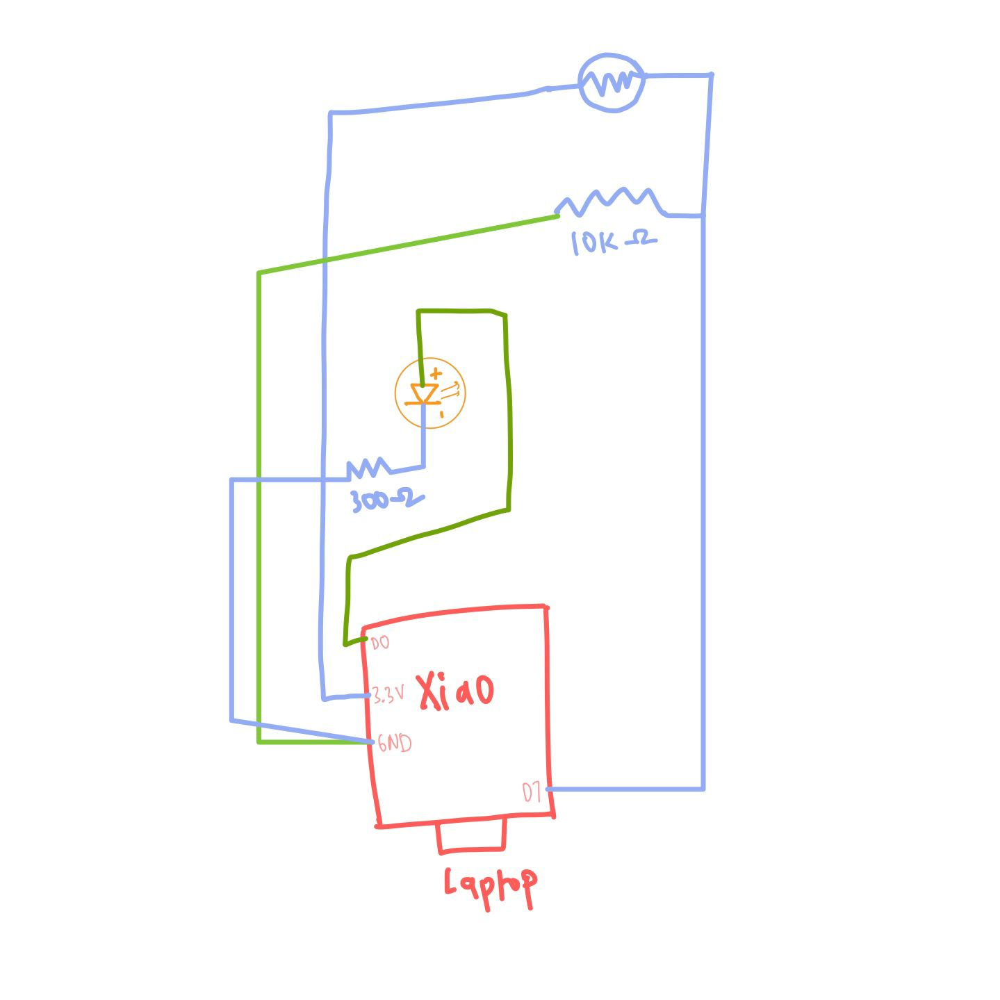
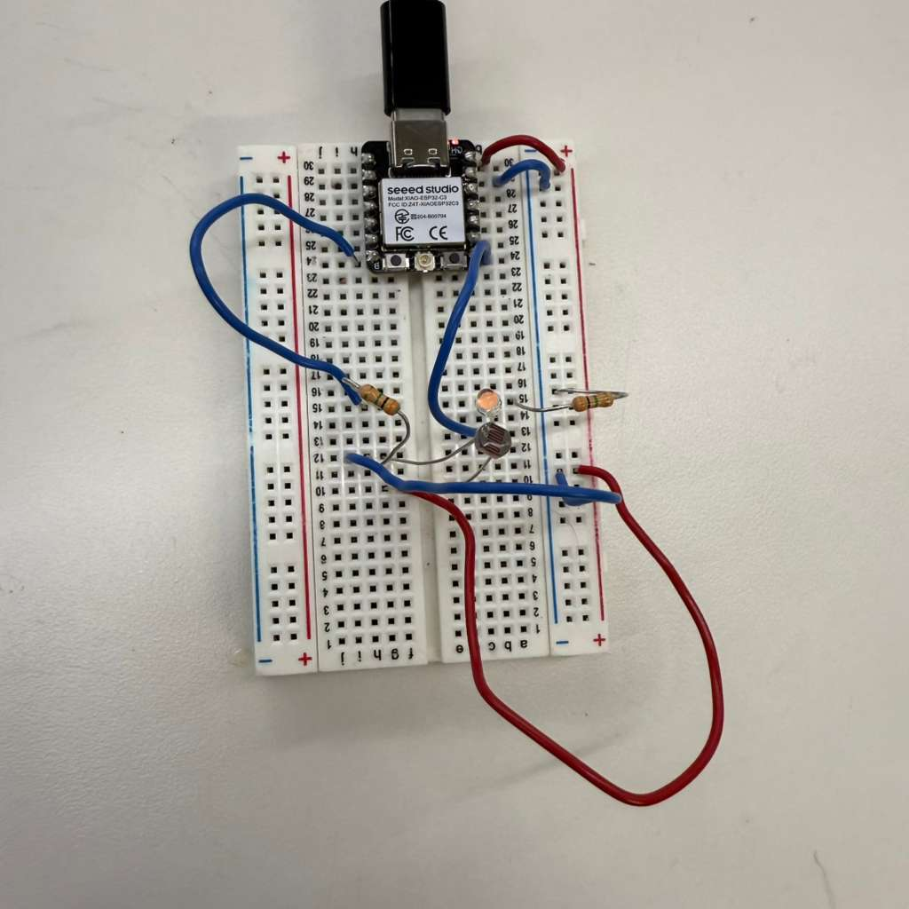
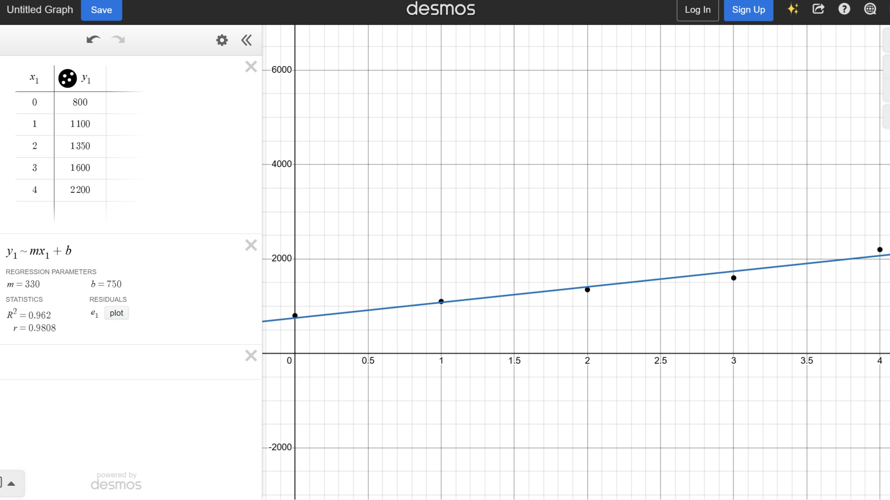

<div class="textcontainer">
<p class="margin"> </p>
<h3>Week 6: Electronic Inputs</h3>
<h4>Assignment 1: Capacitive Sensor</h4>
<p class="margin"></p>
During class, our group was assigned rotation angle as the quantity we had to measure using a capacitive sensor. We decided to use two plates acting as a capacitor: one plate fixed in place, and another plate rotating along the edge of a circular platform. The idea was that as the angle changed, the overlap between the plates would change, which would change the capacitance.
<p class="margin"></p>
To build the setup, we taped one plate to a small upright piece of wood and used clay to position it in front of a motor. Then we laser-cut a small circular cam with a hole in the center that fit onto the motor’s axle. We attached the second plate to the edge of this circle using clay so that when the motor rotated, the plate would sweep around in an arc.
<p class="margin"></p>

<p class="margin"></p>
<p class="margin"></p>
<video width="360" height="640" autoplay muted>
<source src="capacitive_sensor_vid.mp4" type="video/mp4">
Your browser does not support the video tag.
</video>
<p class="margin"></p>
We hooked up alligator clips to each plate and connected them to the appropriate wires and pins on the ESP32. The code for the motor was very simple. We just needed the motor to turn continuously.
<p class="margin"></p>
<p class="margin"></p>

<p class="margin"></p>
After everything was running, we measured capacitance at different rotation angles and plotted the results. The x-axis is the angle (from 0 degrees to 315 degrees) and the y-axis is the measured capacitance. The plot did not come out as clean as we expected. In theory, the capacitance should be lowest around 180 degrees and then increase steadily as the angle moves toward 360/0 degrees, reaching around 90000 (in the units we were using). Instead, our data went up and down in a less predictable way.
<p class="margin"></p>

<p class="margin"></p>
This is probably due to systematic error. We ended up hand-holding the rotating plate at each angle because we could not find tape at the time, so our positioning was not very consistent. It is likely that this human error is why the measured capacitance did not match the ideal trend we expected for the capacitive sensor.
<p class="margin"></p>
<h4>Assignment 2: Using a Photoresistor</h4>
<p class="margin"></p>
I used a photoresistor to control the LED light and this is the code for it. It turns the LED on if there is low light and turns it off if it is light outside.
const int LED_PIN = D7;
const int LDR_PIN = D0;
int sensorValue = 0;
const int threshold = 1800;
void setup() {
pinMode(LED_PIN, OUTPUT);
Serial.begin(115200);
}
void loop() {
sensorValue = analogRead(LDR_PIN);
Serial.println(sensorValue);
if (sensorValue < threshold) {
digitalWrite(LED_PIN, HIGH);
} else {
digitalWrite(LED_PIN, LOW);
}
}
<p class = "margin"></p>
This is a video of the sensor working:
<p class="margin"></p>
<video width="640" height="360" autoplay muted>
<source src="photoresistor_vid.mp4" type="video/mp4">
Your browser does not support the video tag.
</video>
<p class="margin"></p>
This is the picture of the circuit diagram.
<p class="margin"></p>

<p class = "margin"></p>
<p class="margin"></p>

<p class = "margin"></p>
I used my phone at different flashlight settings (0,1,2,3,4) and looked at the serial plotter to get an average value. I tried to keep the phone at a constant distance from the sensor to get reliable values. Then I plotted them out in the graph below! We can see from the best fit line that the realtion is approximately linear.
<p class="margin"></p>

<p class = "margin"></p>
<h4>Assignment 3: Create a file for the CNC machine</h4>
<p class = "margin"></p>
<a download href='./CNC.dxf'>Download my DXF File </a>
<p class = "margin"></p>
</div>